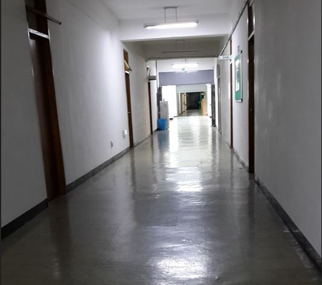

1. 폭력과 수면의 상호 영향
폭력 경험과 트라우마는 단순한 기억의 상처가 아니라, 몸과 뇌의 생리적 리듬까지 변화시키는 사건이다. 연구에 따르면, 폭력과 같은 외상 경험자는 수면 단계의 구조적 변화가 나타나며, 특히 깊은 수면과 REM 수면의 질이 저하된다(Bremner, 2006). 본 글은 브런치북( https://brunch.co.kr/@205593d149c84b6/3) 『감정도 잠이 필요하다』 3부 2장. 폭력과 상실의 그림자: 안전이 무너질 때 깨어나는 밤에 대한 정서 회복의 의미를 찾아보고자 한다.
1) 수면은 단순한 휴식이 아니라 정서적 기억과 감정을 처리하는 시간이다.
2) 폭력 경험자는 밤에도 몸이 먼저 위험 신호를 감지하고 반응하여, 수면이 충분히 회복적이지 못하게 된다.
따라서 폭력과 트라우마는 정신적 고통뿐만 아니라, 신체적 리듬과 정서 조절 능력에도 장기적 영향을 미친다.

2. 트라우마가 수면에 미치는 심리적 메커니즘
폭력 경험자는 수면 동안 반복적 각성, 악몽, 과거 사건의 재경험을 통해 잠든 몸과 깨어 있는 감정을 동시에 경험한다. 이러한 상태는 내적 불안을 심화시키며, 교감신경계를 지속적으로 활성화시켜 수면 시작 지연과 수면 중 자주 깸을 유발한다(Krystal & Edinger, 2008).
1) 정서적 각성: 외상 관련 기억과 감정이 무의식적으로 활성화되어 수면을 방해한다.
2) 신체적 경계 반응: 밤에도 위험 신호를 감지하려는 몸의 준비 상태가 유지된다.
3) 수면 불일치: 몸은 잠들어도, 마음과 감정은 깨어 있는 상태가 반복된다.
이러한 과정에서 상담자는 내담자가 경험하는 수면 불안과 트라우마 기억을 이해하고, 안전하게 탐색할 수 있는 환경을 제공해야 한다. 단순한 수면 지침만으로는 회복이 어렵기 때문에, 정서적 안정과 신체 리듬 회복을 동시에 지원하는 전략이 필요하다.
3. 심리적 개입 전략
폭력과 트라우마로 인한 수면 문제를 다루기 위해, 상담자는 다음과 같은 접근법을 적용한다.
1) 트라우마 중심 인지행동치료(CBT-T)
• 폭력 경험과 관련된 부정적 사고를 탐색하고 재구성한다.
• 수면 환경 조정과 인지적 패턴 수정으로 수면 질 개선을 목표로 한다 (Perlis et al., 2016).
2) EMDR(안구운동 민감소실 및 재처리 치료)
• 반복적 외상 기억의 정서적 충격을 줄이고, 신체적 각성 반응을 완화한다 (Lee, 2020).
3) 자기안정화 및 마음챙김 훈련
• 심리적 안전감과 정서 조절 능력을 강화하며, 수면 중 나타나는 불안을 감소시킨다 (권영주, 2017).
4) 생활 루틴 재조정
• 규칙적인 기상·취침 시간, 낮 활동, 취침 전 환경 조정으로 몸의 생체리듬 안정.
• 내담자가 스스로 수면과 정서를 조율하도록 지도한다.
상담 과정에서 내담자는 자신의 트라우마 경험과 수면 패턴을 연결하여 이해하며, 몸과 마음의 불일치를 점진적으로 조정한다. 상담자는 내담자가 안전하게 감정을 탐색하고, 신체적 리듬과 정서적 상태를 통합적으로 재조정하도록 돕는 촉진자의 역할을 수행한다.
4. 안전과 회복의 통합적 접근
폭력과 트라우마로 인한 불면은 단순한 ‘잠 부족’이 아니라 정서적, 신체적, 인지적 과정이 복합적으로 얽힌 현상이다.
• 심리적 개입과 생활습관 조정이 병행될 때, 깊은 수면과 정서적 안정 회복 가능성이 높아진다.
• 상담자는 내담자의 감정과 신체적 리듬을 동시에 관찰하고, 안전하게 탐색할 수 있는 통합적 공간을 제공해야 한다.
“폭력의 그림자는 밤에도 머물지만, 안전하게 다루고 탐색될 때 몸과 마음은 다시 평온을 되찾는다.”
참고문헌
Bremner, J. D. (2006). Traumatic stress: effects on the brain.Dialogues in Clinical Neuroscience, 8(4), 445–461.
Krystal, A. D., & Edinger, J. D. (2008). Sleep and psychiatric disorders.Neurologic Clinics, 26(4), 1063–1094.
Perlis, M., Jungquist, C., Smith, M., & Posner, D. (2016). Cognitive Behavioral Treatment of Insomnia.Springer.
이현정 (2020). 트라우마와 수면치료.서울: 학지사.
권영주 (2017). 마음챙김과 수면: 정서 조절 중심 접근.서울: 시그마프레스.
김수현 (2018). 불면과 감정조절: 심리학적 접근.서울: 학지사.
2026.03.11 - [감정도 잠이 필요하다] - 이혼과 불면(1) : 상실이 몸과 마음의 리듬에 혼란 증가
이혼과 불면(1) : 상실이 몸과 마음의 리듬에 혼란 증가
1. 이혼과 수면의 연결 이혼은 단순한 관계의 종료가 아니다. 이혼에는 개인의 삶의 구조, 정서적 안정 및 일상 리듬까지 뒤흔드는 중대한 사건이다. 잠들기 전 이혼 과정에서 자신이 충분히 하
think-sis.co.kr
2025.12.18 - [감정도 잠이 필요하다] - 밤 시간 각성과 ‘작은 움직임’의 심리적 회복의 과정(5)
밤 시간 각성과 ‘작은 움직임’의 심리적 회복의 과정(5)
밤은 많은 이들에게 하루의 끝을 의미하지만, 동시에 내면의 깊은 정서를 재조정하는 중요한 시간대이기도 하다. 이 장에서는 밤 시간 동안의 각성이 어떻게 심리적으로 작용하는지, 그리고 ‘
think-sis.co.kr